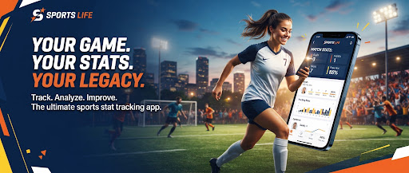
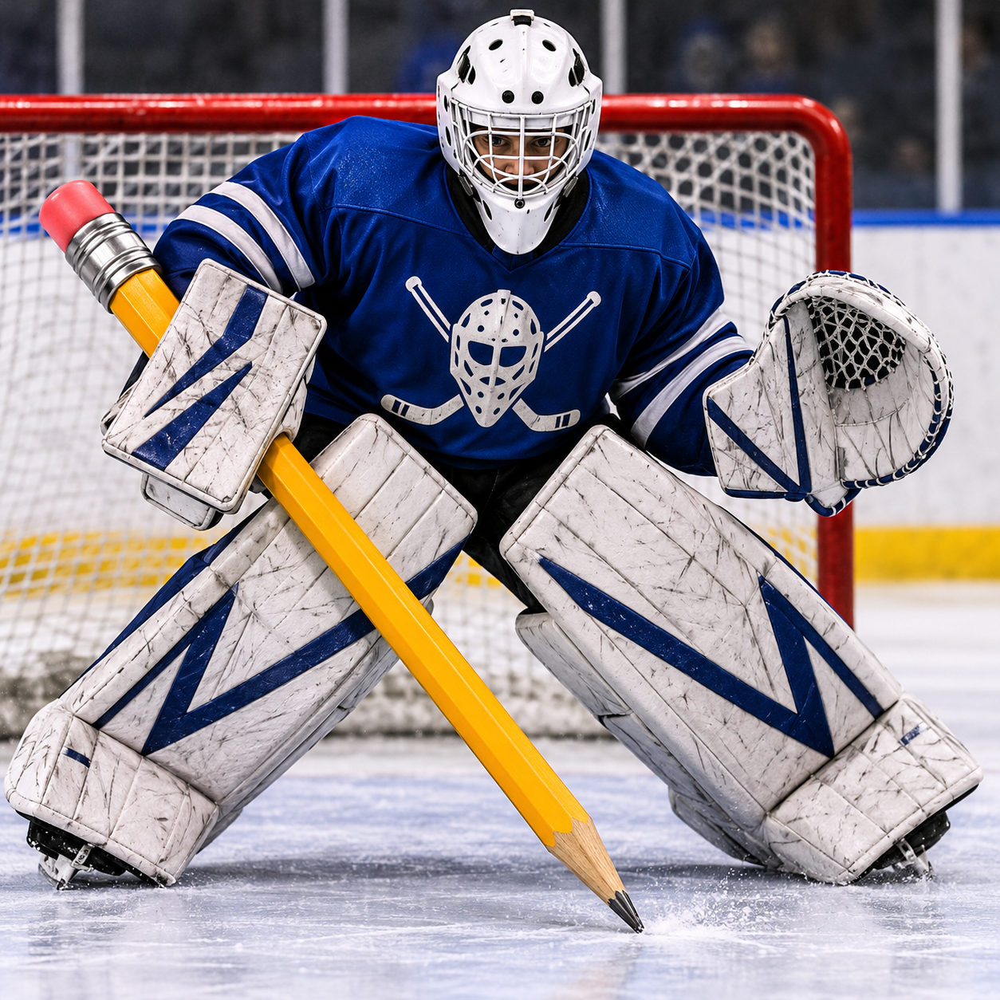

Take control of your athletic performance with an all-in-one personal sports stat tracker built for players, parents, and coaches.
- Live & Post-Game Tracking: Tap in your stats in real time as the action unfolds, or log your box score after the game wraps up.
-Career & Season Totals: Watch your numbers add up automatically across multiple seasons, tournaments, and leagues.
- Custom Metrics: Track the exact stats that matter to your sport and position—from goals, assists, and shots to saves, percentages, and averages.
-Multi-Profile Support: Easily manage profiles for yourself, your kids, or multiple sports in one clean dashboard.
If you have any issues with this app, want to recommend changes or would like to see a different Sports app, please email Vo1d3dTesting@gmail.com.
Sports Life Apps.
